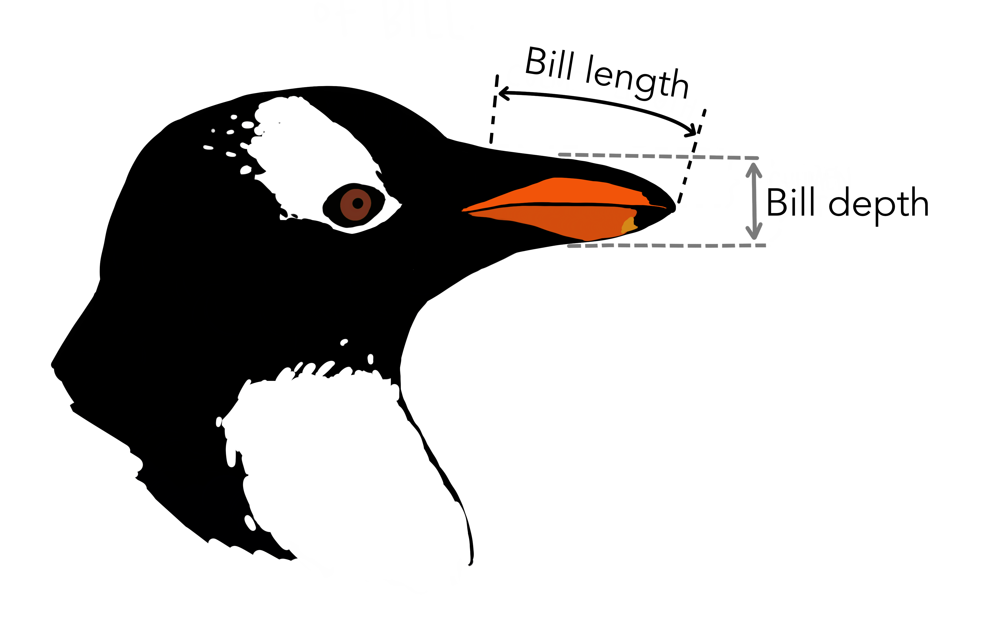

url = "https://raw.githubusercontent.com/mwaskom/seaborn-data/master/penguins.csv"
penguins = pd.read_csv(url)2 Datos
En esta sección importarás los datos sobre los pingüinos del archipiélago Palmer presentados en la introducción y conocerás la información que contienen.
2.1 Importar los datos
Como se indicó en la introducción, los datos con los que vamos a trabajar están disponibles en la web en un fichero de formato CSV.
Ejecuta las instrucciones a continuación para importar el archivo usando la función read_csv() y guardar el resultado en una variable de nombre penguins:
El objeto penguins que acabas de crear es una hoja de datos, representada en pandas con la clase DataFrame.
type(penguins)pandas.core.frame.DataFrameEn los siguientes apartados aprenderás a realizar una exploración inicial de la hoja de datos penguins que acabas de crear para conocer su estructura y la información que contiene.
2.2 Dimensiones
Una hoja de datos es una estructura matricial o tabular que contiene datos organizados por filas y columnas.
Para saber las dimensiones de nuestra hoja de datos penguins consulta su propiedad shape:
penguins.shape(344, 7)Vemos que nuestra hoja de datos tiene 344 filas y 7 columnas.
2.3 Primeras y últimas filas
Con las siguientes instrucciones puedes visualizar las cinco primeras y últimas filas de la hoja de datos penguins que acabas de crear.
penguins.head(5)| species | island | bill_length_mm | bill_depth_mm | flipper_length_mm | body_mass_g | sex | |
|---|---|---|---|---|---|---|---|
| 0 | Adelie | Torgersen | 39.1 | 18.7 | 181.0 | 3750.0 | MALE |
| 1 | Adelie | Torgersen | 39.5 | 17.4 | 186.0 | 3800.0 | FEMALE |
| 2 | Adelie | Torgersen | 40.3 | 18.0 | 195.0 | 3250.0 | FEMALE |
| 3 | Adelie | Torgersen | NaN | NaN | NaN | NaN | NaN |
| 4 | Adelie | Torgersen | 36.7 | 19.3 | 193.0 | 3450.0 | FEMALE |
penguins.tail(5)| species | island | bill_length_mm | bill_depth_mm | flipper_length_mm | body_mass_g | sex | |
|---|---|---|---|---|---|---|---|
| 339 | Gentoo | Biscoe | NaN | NaN | NaN | NaN | NaN |
| 340 | Gentoo | Biscoe | 46.8 | 14.3 | 215.0 | 4850.0 | FEMALE |
| 341 | Gentoo | Biscoe | 50.4 | 15.7 | 222.0 | 5750.0 | MALE |
| 342 | Gentoo | Biscoe | 45.2 | 14.8 | 212.0 | 5200.0 | FEMALE |
| 343 | Gentoo | Biscoe | 49.9 | 16.1 | 213.0 | 5400.0 | MALE |
2.4 Estructura
En nuestra hoja de datos penguins:
Cada columna representa una variable asociada a una propiedad o característica de los pingüinos. Por ejemplo, la primera columna, de nombre
speciesindica la especie (Chinstrap, Adélie o Gentoo) de pingüino. En el siguiente apartado se describen las otras seis variables.Cada fila se corresponde con un pingüino concreto de los \(344\) seleccionados en el estudio.
Cada celda contiene el valor de la característica del pingüino en la correspondiente fila.
Por ejemplo, mirando la primera fila de la hoja de datos
| species | island | bill_length_mm | bill_depth_mm | flipper_length_mm | body_mass_g | sex | |
|---|---|---|---|---|---|---|---|
| 0 | Adelie | Torgersen | 39.1 | 18.7 | 181.0 | 3750.0 | MALE |
vemos en la primera celda que el primer pingüino del listado es de la especie Adelie.
Unos mismos datos pueden organizarse o presentarse de diferentes maneras en diferentes hojas de datos. Para que sea sencillo trabajar con una hoja de datos es conveniente que haya una relación clara entre su significado y su estructura. Se considera que la hoja de datos está ordenada o limpia (en inglés se habla de tidy data) si está organizada de acuerdo con los siguientes principios:
- Cada columna representa una variable o característica de interés.
- Cada fila representa una observación, caso o unidad experimental.
- Cada celda contiene un valor, el de la variable en la correspondiente columna para la observación en la correspondiente fila.
De acuerdo con la descripción inicial, nuestra hoja de datos cumple con los principios anteriores.
2.5 Variables
Ejecuta la siguiente instrucción:
penguins.info()<class 'pandas.core.frame.DataFrame'>
RangeIndex: 344 entries, 0 to 343
Data columns (total 7 columns):
# Column Non-Null Count Dtype
--- ------ -------------- -----
0 species 344 non-null object
1 island 344 non-null object
2 bill_length_mm 342 non-null float64
3 bill_depth_mm 342 non-null float64
4 flipper_length_mm 342 non-null float64
5 body_mass_g 342 non-null float64
6 sex 333 non-null object
dtypes: float64(4), object(3)
memory usage: 18.9+ KBLa salida del método info() nos da una tabla con información sobre las siete variables de nuestra hoja de datos.
2.5.1 Descripción
En la columna de la tabla de nombre Column se lista el nombre de las siete variables en penguins. El significado de las variables es el siguiente:
| Nombre | Descripción |
|---|---|
species |
Especie de pingüinos (Chinstrap, Adélie o Gentoo) |
island |
Nombre de la isla del archipíelago Palmer (Dream, Torgersen o Biscoe) |
bill_length_mm |
Longitud del pico, en milímetros (ver Figura 2.1) |
bill_depth_mm |
Anchura del pico, en milímetros (ver Figura 2.1) |
flipper_length_mm |
Longitud de las alas |
body_mass_g |
Peso en gramos |
sex |
Sexo (MALE o FEMALE) |

bill_length_mm y bill_depth_mm (Artista @allison_horst)Volviendo a mirar la primera fila de nuestra hoja de datos
| species | island | bill_length_mm | bill_depth_mm | flipper_length_mm | body_mass_g | sex | |
|---|---|---|---|---|---|---|---|
| 0 | Adelie | Torgersen | 39.1 | 18.7 | 181.0 | 3750.0 | MALE |
ahora sabes que el primer pingüino es de la especie Adelie, vive en la isla Torgensen, las dimensiones de su pico son \(39.1 \times 18.7\) milímetros, sus alas miden \(181\) milímetros, pesa \(3\) kilos y \(750\) gramos, y es un macho.
Ejercicio 2.1 Describe las características del tercer pingüino del estudio (índice 2).
2.5.2 Valores nulos
Fíjate ahora en la columna Non-Null Count de la salida del método info():
<class 'pandas.core.frame.DataFrame'>
RangeIndex: 344 entries, 0 to 343
Data columns (total 7 columns):
# Column Non-Null Count Dtype
--- ------ -------------- -----
0 species 344 non-null object
1 island 344 non-null object
2 bill_length_mm 342 non-null float64
3 bill_depth_mm 342 non-null float64
4 flipper_length_mm 342 non-null float64
5 body_mass_g 342 non-null float64
6 sex 333 non-null object
dtypes: float64(4), object(3)
memory usage: 18.9+ KBLos valores nulos o perdidos son valores no disponibles, que no han podido registrarse, se representan con el símbolo NaN (iniciales de Not A Number).
Si vuelves a mirar las cinco primeras filas de la hoja de datos verás que para el cuarto pingüino sólo sabemos que es de la especie Adelie y vive el la isla Torgersen, y se desconocen las otras cinco variables.
| species | island | bill_length_mm | bill_depth_mm | flipper_length_mm | body_mass_g | sex | |
|---|---|---|---|---|---|---|---|
| 3 | Adelie | Torgersen | NaN | NaN | NaN | NaN | NaN |
Los diferentes métodos de la librería pandas contemplan la posibilidad de que las hojas de datos tengan valores nulos y los tratan de un forma predeterminada (por ejemplo, la media los ignora por defecto).
2.5.3 Tipos de variables
Las siete variables de nuestra hoja de datos se dividen en dos clases:
species,islandysexson variables categóricas. Este tipo de variables representan una característica cualitativa que puede tomar un número finito y fijo de valores, denominados categorías o niveles.Las cuatro restantes,
bill_length_mm,bill_depth_mm,flipper_length_mmybody_mass_gson variables numéricas, que representan características cuantitativas que se describen con valores numéricos (números enteros o reales).
pandas asigna un tipo a cada variable de una hoja de datos en función de los valores que presenta, como puede verse en la columna Dtype de la salida del método info():
<class 'pandas.core.frame.DataFrame'>
RangeIndex: 344 entries, 0 to 343
Data columns (total 7 columns):
# Column Non-Null Count Dtype
--- ------ -------------- -----
0 species 344 non-null object
1 island 344 non-null object
2 bill_length_mm 342 non-null float64
3 bill_depth_mm 342 non-null float64
4 flipper_length_mm 342 non-null float64
5 body_mass_g 342 non-null float64
6 sex 333 non-null object
dtypes: float64(4), object(3)
memory usage: 18.9+ KB2.6 Índice
Igual que cada columna (variable) en una hoja de datos tiene un nombre, cada fila (observación) también tiene una etiqueta identificativa. En nuestra hoja de datos cada uno de los \(344\) pingüinos se identifica con un número entero de la secuencia 0, 1, …, 333.
| species | island | bill_length_mm | bill_depth_mm | flipper_length_mm | body_mass_g | sex | |
|---|---|---|---|---|---|---|---|
| 0 | Adelie | Torgersen | 39.1 | 18.7 | 181.0 | 3750.0 | MALE |
| 1 | Adelie | Torgersen | 39.5 | 17.4 | 186.0 | 3800.0 | FEMALE |
| 2 | Adelie | Torgersen | 40.3 | 18.0 | 195.0 | 3250.0 | FEMALE |
| species | island | bill_length_mm | bill_depth_mm | flipper_length_mm | body_mass_g | sex | |
|---|---|---|---|---|---|---|---|
| 341 | Gentoo | Biscoe | 50.4 | 15.7 | 222.0 | 5750.0 | MALE |
| 342 | Gentoo | Biscoe | 45.2 | 14.8 | 212.0 | 5200.0 | FEMALE |
| 343 | Gentoo | Biscoe | 49.9 | 16.1 | 213.0 | 5400.0 | MALE |
Las etiquetas identificativas de las filas de una hoja de datos forman su índice. El índice de una hoja de datos de pandas se registra en su propiedad index.
penguins.indexRangeIndex(start=0, stop=344, step=1)Si cada pingüino estuviera identificado por un código, podríamos haber indicado esa variable como índice en el momento de la importación de los datos. Cuando no se indica el índice de una hoja de datos de forma explícita, pandas asigna una secuencia de números enteros comenzando en 0, como ha ocurrido en nuestro caso.